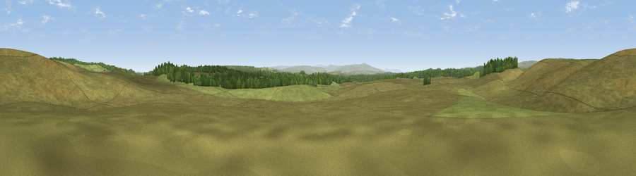

Viewpoint osmp2713291538
#27301 in England · top 66% of its area beats it · —Where it is
The exact computed spot (NY 70011 74715). Click the marker for map links.
The view, rendered

A 360° render of this exact spot computed from the terrain model, tree cover and land cover — summer colours, afternoon light, calibrated against photographs of famous viewpoints. Real trees, hedges and buildings will differ in detail.
The panorama
Grey silhouette: terrain skyline in each direction (720 bearings, Earth curvature and refraction included). Dashed green: skyline with trees (+15 m) and buildings (+8 m) as obstacles. Blue strip: how far the ground is visible on each bearing.
Where the view opens
Wedge length = distance to the farthest visible ground on that bearing (vegetation-aware). Rings at 10, 25 and 50 km.
What fills the view
89% grassland · 11% woodland
Angular shares of the visible panorama (visual magnitude), not map area. Landscape diversity 0.15 (0–1 Shannon).
Key numbers
More beautiful places nearby
The staircase of upgrades: each row has a higher view potential than everything closer. Driving times are estimates from straight-line distance, calibrated against real road routing — check an actual route before setting out.
| Place | Direction | Drive | Score |
|---|---|---|---|
| Great Watch Hill | N · 0 km | ~2 min | 50.5 |
| Rushy Rigg | NNE · 1 km | ~4 min | 51.6 |
| Viewpoint c11517_7368 | NW · 2 km | ~5 min | 53.6 |
| Viewpoint c11416_7387 | S · 4 km | ~9 min | 55.9 |
| Viewpoint c11406_7438 | SSE · 5 km | ~11 min | 56.7 |
| Viewpoint c11409_7452 | SSE · 5 km | ~11 min | 64.2 |
| Viewpoint c11587_7305 | NW · 7 km | ~14 min | 66.9 |
| Bolts Law | N · 7 km | ~15 min | 67.1 |
55.06600, -2.47110 · source: osm peak · position refined by local search. Computed location — check access rights before visiting.